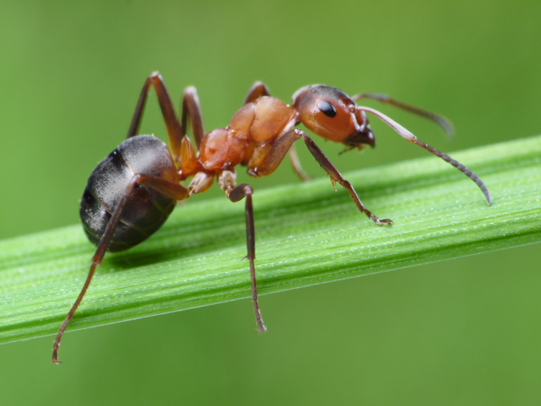

Hormiga
- Nombre comun: Hormiga
- Nombre cientifico: Formicidae
- Origen:Su origen se ubica al final de la epoca del Cretacico, hace 146 millones de años.
- Cantidad: indefinido
- Caracteristicas: Las hormigas se caracterizan por sus antenas y por un exoesqueleto que cubre y protege sus cuerpos. Como todo insecto, no poseen pulmones y respiran a traves de espiraculos ubicados en sus costados. La mayoria de las especies de hormiga tiene una vision muy pobre, pero las antenas les permiten detectar sustancias en el aire asi como vibraciones. Sus mandibulas son muy fuertes, pues con ellas construyen nidos, transportan alimento y se defienden de sus depredadores. El color de su estructura corporal varía del rojo al negro.
- Alimentacion:Las hormigas prefieren los alimentos dulces. Tienen un buen sentido del olfato. Cuando encuentran un alimento solido, lo transportan hasta el nido y cuando es líquido, lo comen y lo transportan en su abdomen (tienen dos estomagos). Luego lo pueden regurgitar para dar darselo a otras hormigas.
- Reproduccion: hormiga reina es solitaria y suele ser de mayor tamaño. Tras la fecundacion, que generalmente tiene lugar en el aire, la reina comienza a cavar una pequeña camara y permanece alli hasta el año siguiente. Pone los huevos que en poco tiempo se transformaran en hormigas obreras.